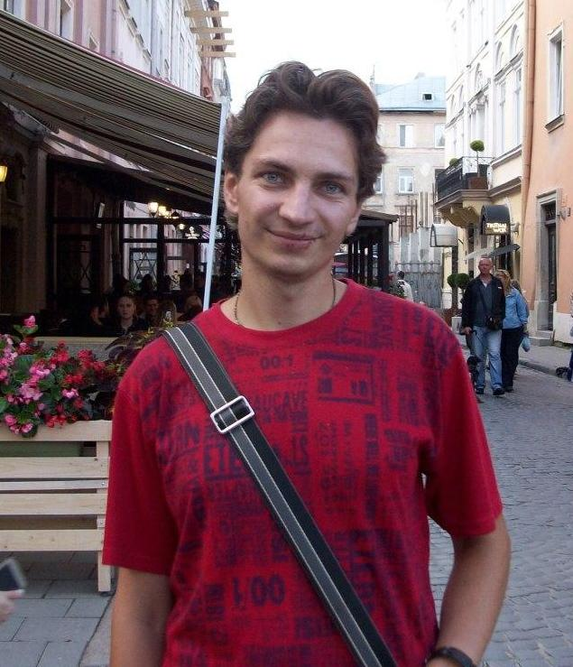

Junior full-stack developer curriculum vitae

Aleksandr Dmitrov
Desired position: Junior full-stack developer
Desired salary: 600 USD
Date of Birth: 30.06.1990
Residence: Ukraine, Zaporozhye city. I am ready to work remotely.
+380978091179
 dmitrovaleksandr@gmail.com
dmitrovaleksandr@gmail.com
vk.com
Experience and skill
- JavaScript programming
- Typesetting - HTML and CSS3
- Using Linux and Git
- Writing a backend with Node.js
- Using the React.js library
- Using Docker
- Work with PostgreSQL and MongoDB databases
Experiencel
- 2013-November 2014-February: Credit specialist. Drawing up loan agreements for individuals.
- 2015-September 2017-February: Accountant. Keeping payroll and fixed assets.
- 2017-February 2020: Shop assistant. Consulting and sale of electronics and digital devices.
Education
- 2012 Taurida State Agrotechnological University, Melitopol. Specialty: Finance and credit. Master.
- 2020 IT Programming Courses, Zaporozhye. Junior full-stack developer